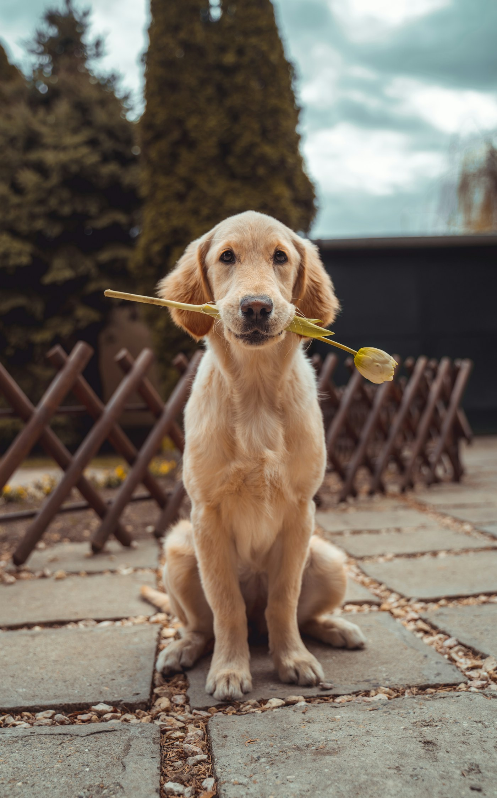
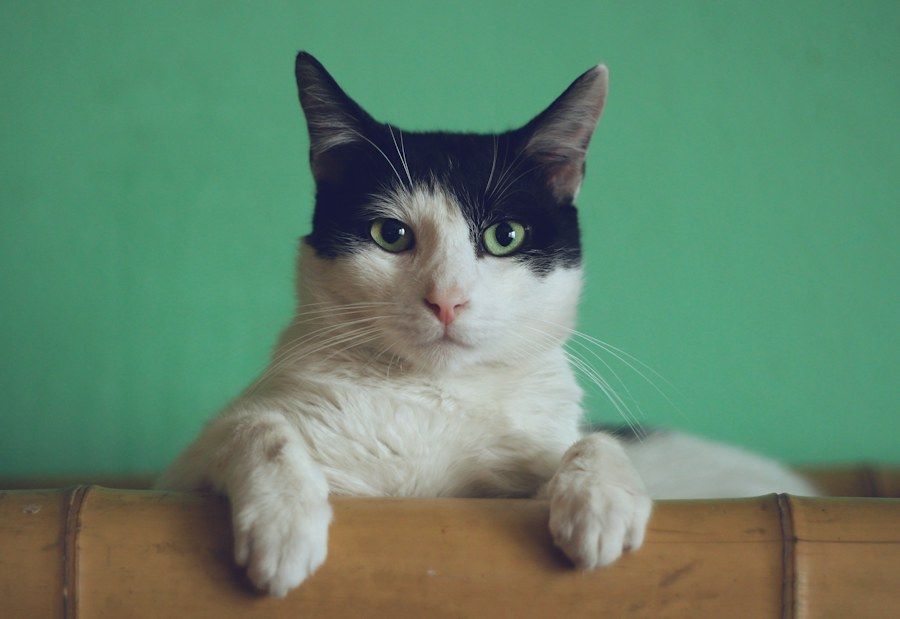
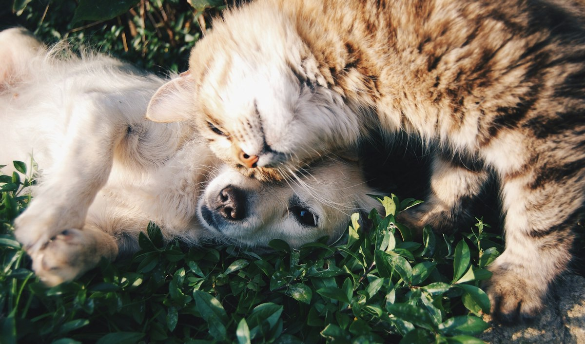
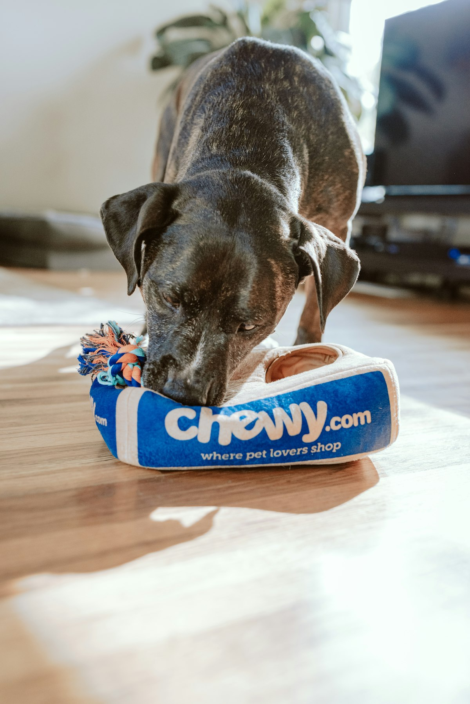
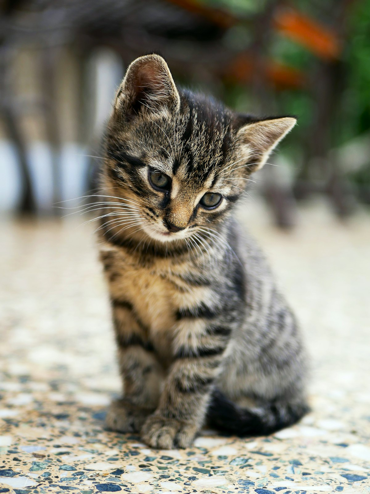

Disponível
Luna
Cachorro · Golden Retriever
Carinhosa, brincalhona e muito companheira. Adora brincar ao ar livre.
Adoção responsável em São Paulo e região
Resgatamos cães e gatos, cuidamos deles e procuramos famílias para quem precisa de uma segunda chance. Quem adota muda a própria rotina e a do animal.


Histórias que procuram um lar
A equipe avalia, vacina e acompanha cada animal, e conhece o temperamento de todos.
Cachorro · Golden Retriever
Carinhosa, brincalhona e muito companheira. Adora brincar ao ar livre.
Gato · Sem raça definida
Delicada e observadora, conquista aos poucos e adora um colo.
 Disponível
Disponível
Gato · Sem raça definida
Tranquilo, carinhoso e sociável. Procura uma rotina calma e muito afeto.
Desde 2019
Desde 2019, resgatamos, reabilitamos e encaminhamos cães e gatos para novas famílias. O trabalho depende de voluntários, veterinários parceiros e lares temporários.
Como funciona a adoção
Adotar é um compromisso. Por isso, cada etapa existe para garantir segurança e bem-estar para o animal e para a sua família.
Explore os perfis, leia as histórias e encontre quem combina com a sua rotina e com o seu jeito de viver.
Preencha o formulário e participe de uma entrevista. Vamos entender a casa, a rotina e as expectativas da família.
Com orientação da equipe, adapte os espaços, assine o termo de adoção e acompanhe a adaptação com nosso suporte.
Histórias de quem adotou
A adoção da Mel foi a melhor decisão que tomamos. A equipe explicou tudo com calma, visitou nossa casa e continua presente até hoje. Hoje ela é a dona do sofá.
O Thor chegou em um momento difícil e trouxe rotina, carinho e alegria. Gostei muito da transparência da ONG e do acompanhamento depois da adoção.
Eu tinha medo de não dar conta, mas a entrevista me ajudou a entender o que era necessário. Adotar a Nina foi um encontro, não uma escolha apressada.
Notícias e histórias

Adoções· 4 min de leitura
Depois de meses de espera, os dois gatos foram adotados juntos por uma família de São Paulo.

Campanhas· 3 min de leitura
Com apoio de pet shops, escolas e famílias, a campanha superou a meta inicial em 40%.

Cuidados· 6 min de leitura
Telas de proteção, cantinho de descanso e rotina tranquila são cuidados essenciais nos primeiros dias.